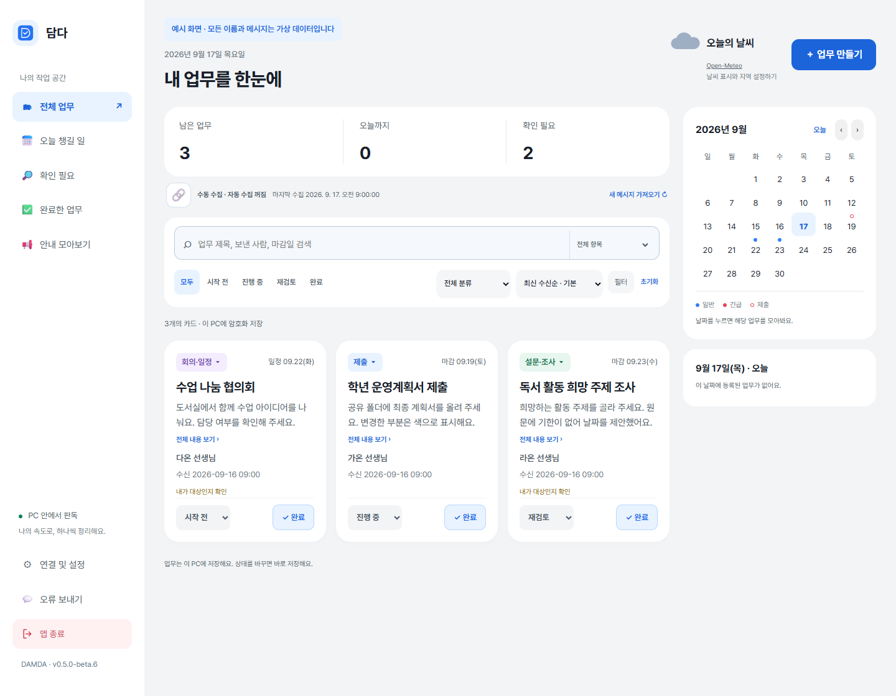
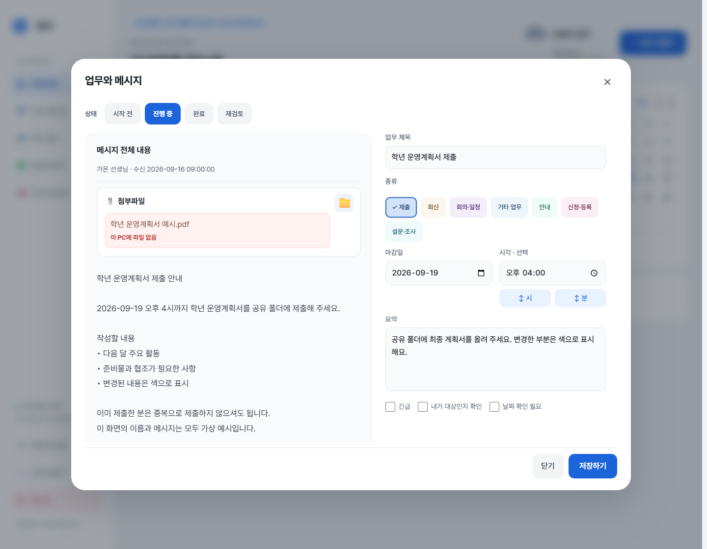
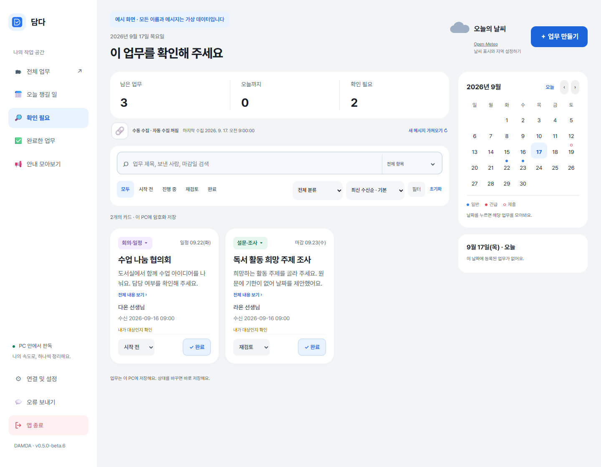
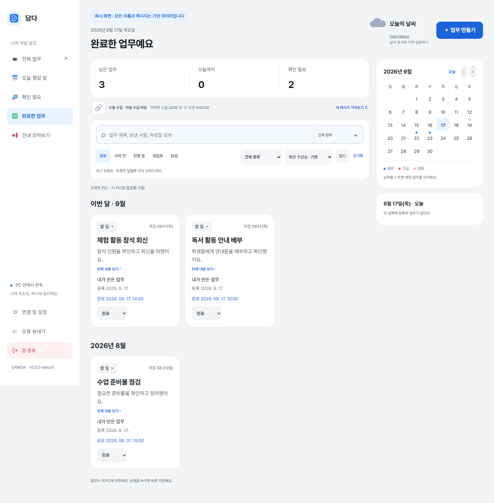
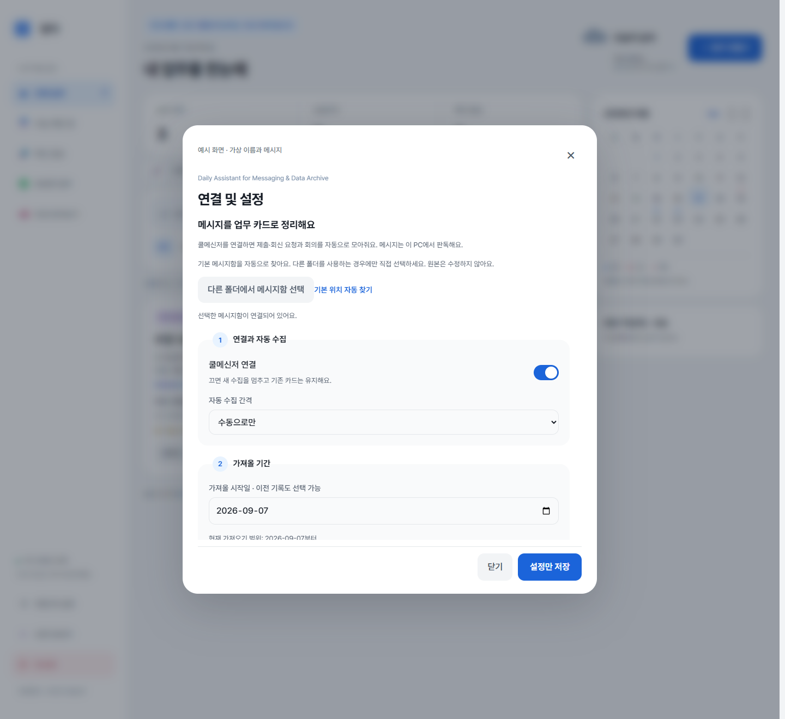
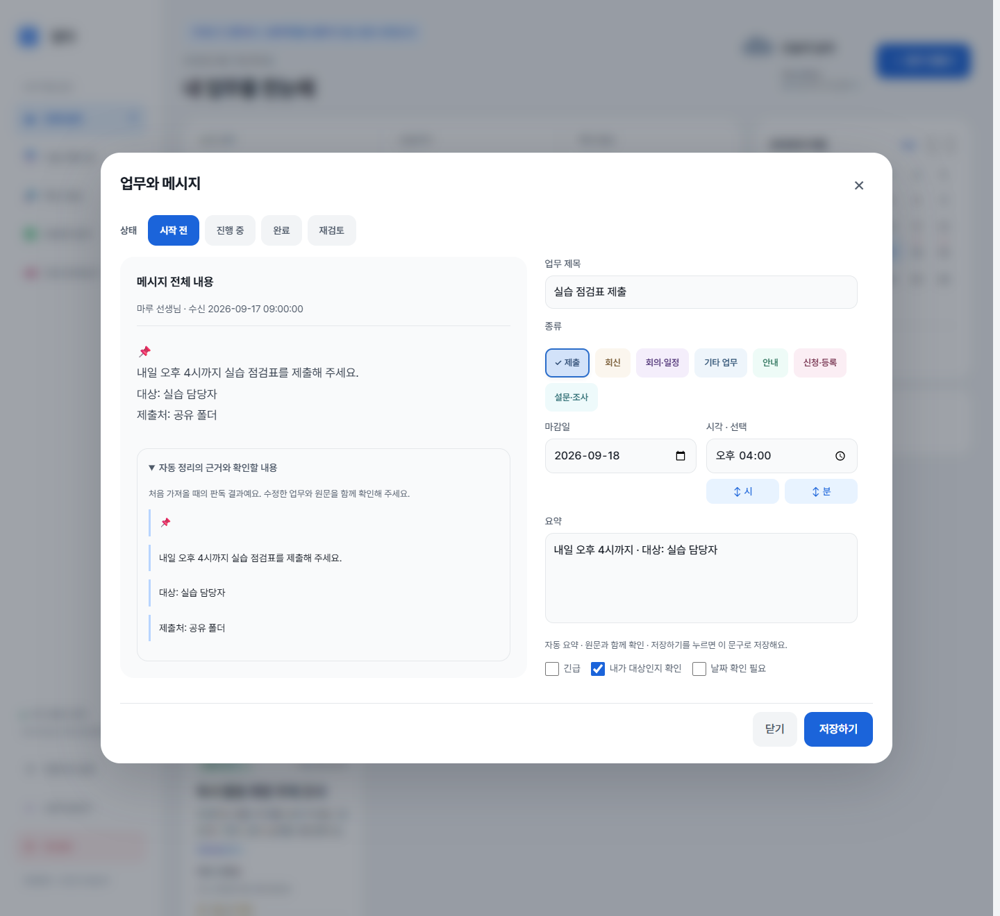
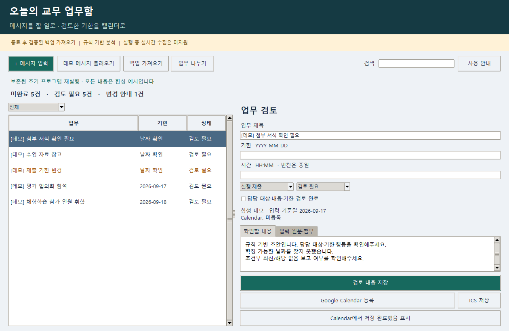
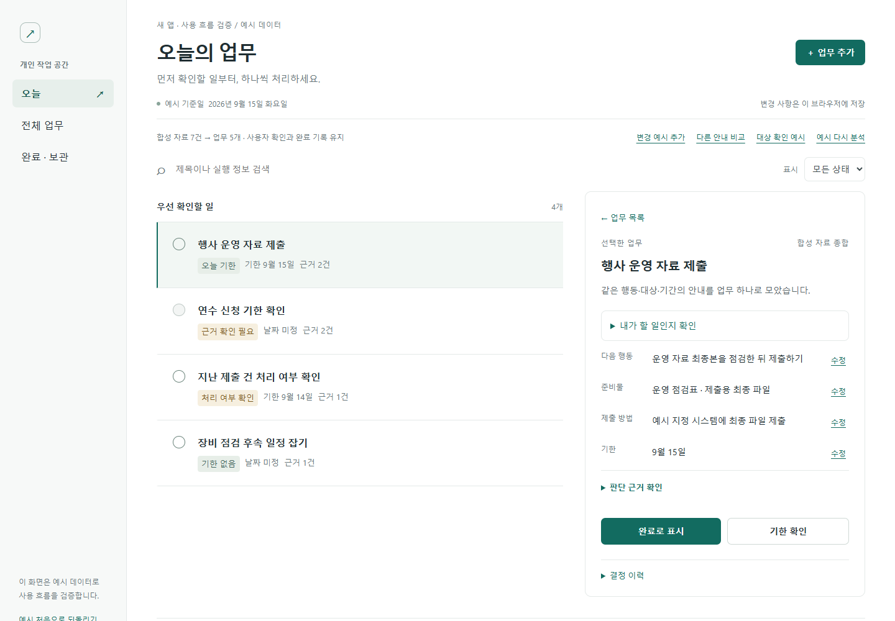
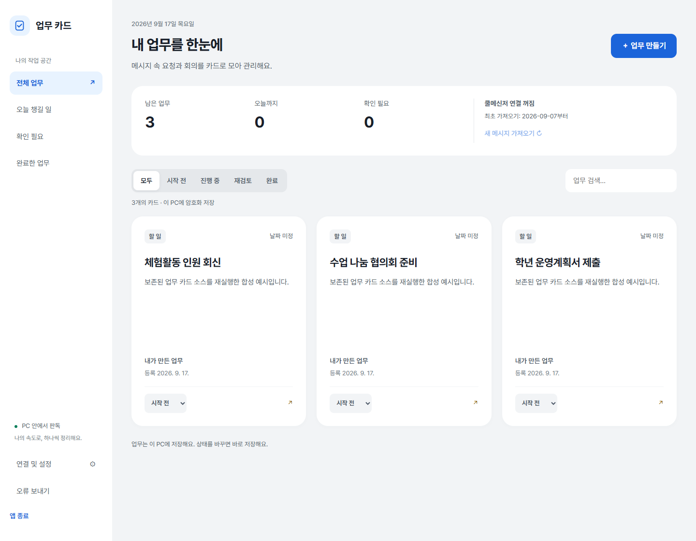

무엇을 해야 하는지
제목과 요약, 보낸 사람과 마감을 카드 하나에서 확인해요. 핵심만 간결하게 보고, 긴 내용은 눌러서 펼쳐요. 메시지 하나는 카드 하나로 모아요.
Daily Assistant for Messaging & Data Archive
요청과 회의를 업무 카드로 모아 보세요.
원문을 확인하고, 마감을 수정하고, 끝낸 일까지 한곳에서 관리해요.
Windows 64비트 설치형 베타 · 쿨메신저 연결은 선택 사항이에요.

업무의 흐름을 한눈에
제목과 요약, 보낸 사람과 마감을 카드 하나에서 확인해요. 핵심만 간결하게 보고, 긴 내용은 눌러서 펼쳐요. 메시지 하나는 카드 하나로 모아요.
시작 전, 진행 중, 완료, 재검토. 카드에서 상태를 바꾸면 바로 저장돼요.
완료한 시간을 기록해요. 끝낸 업무는 최근 완료순으로, 지난 업무는 월별로 돌아봐요.
원문과 편집을 함께
카드를 누르면 메시지 전체 내용과 편집 창이 함께 열려요. 원문을 보며 제목과 요약, 날짜를 직접 다듬을 수 있어요.
확인하고 저장한 내용으로 업무를 이어가세요.

확실하지 않은 날짜는 따로
마감이 분명하지 않으면 수신일 이후 주말과 공휴일을 제외한 5일 뒤를 제안해요. 원문을 확인하고 날짜를 확정해 주세요.
공휴일은 앱에 포함된 자료를 사용해요. 새로 지정된 임시공휴일은 업데이트가 필요할 수 있어요.

완료도 기록으로
최근 완료한 업무부터 확인하고, 이전 달의 업무도 월별로 찾아보세요. 완료를 취소했다가 다시 완료하면 새로운 완료 시각을 기록해요.

필요한 만큼 연결하세요
쿨메신저 연결 없이도 직접 업무를 만들고 관리할 수 있어요.
연결 및 설정에서 가져올 기간과 주기를 정해요. 첫 시작일은 기본 10일 전이에요.
메인 화면의 🔗 연결 버튼에서 자동 가져오기를 준비해요. 최초 한 번 승인하면 변경을 감지해 가져와요. 관리되는 PC는 전산 담당자의 설정이 필요할 수 있어요.
담당과 날짜를 확인하고, 업무에 맞게 수정한 뒤 상태를 바꿔 보세요.

내 PC 안에 저장
검증한 백업 복사본에서 메시지를 가져와요. 원문과 업무는 현재 Windows 사용자 계정에 연결된 방식으로 암호화해 저장해요.
현재 판독은 로컬 규칙 기반이며 외부 AI로 메시지를 보내지 않아요. 저장 파일 복사만으로 다른 기기에 이관할 수 있는 구조는 아니에요.
개발 현황
설치 파일로 시작하고, 새 버전 알림으로 개선 사항을 받아보세요. 자동 판독은 원문과 함께 확인해 주세요.
Python을 따로 설치하지 않아도 돼요. WebView2가 필요하며, 설치 마법사에서 런타임 설치를 도와줘요.
모바일 앱·동기화·학습된 소형 AI는 현재 제공 기능이 아니에요. PC·모바일 읽음 상태 보존을 보장하는 버전도 아니에요.
확인할 수 있는 자동 정리
최초 판독에 사용한 원문 구간과 확인이 필요한 이유를 펼쳐 볼 수 있어요. 대상과 날짜가 맞는지 확인하고 내 업무에 맞게 다듬어 보세요.
이 설명은 처음 가져왔을 때의 분석이에요. 직접 수정한 내용의 정확성을 보증하지 않아요.

담다를 만들며
분명 읽었는데, 다시 찾게 되는 제출 기한.
메시지를 읽는 일과 해야 할 일을 챙기는 일 사이에서 시작했습니다.
프로젝트에 남아 있는 프로그램과 개발 기록으로 돌아본 이야기예요.
화면의 내용은 모두 가상 예시이며, 재촬영한 화면은 따로 표시했어요.
초기 TeacherInbox는 표로 된 업무함이었어요. 메시지를 직접 넣고 제목과 날짜를 살펴보며 업무로 정리했죠. 이후에는 검증된 백업에서 가져오는 기능도 붙었습니다.
그런데 정보를 가져오는 것만으로는 충분하지 않았어요. 결국 선생님이 해야 할 일이 잘 보여야 했습니다.

할 일과 일정을 함께 보여주는 COOL 업무비서를 거쳐, 더 단순한 개인 작업 공간도 만들어 보았습니다. 목록 옆에서 실행 방법과 근거를 확인하고 고치는 실험이었어요.
여러 화면을 만들며 남은 질문은 하나였어요. “다시 읽고 찾는 수고를 얼마나 줄일 수 있을까?”

TaskCards에서는 메시지 속 요청을 큰 카드로 모으고, 상태를 바꾸며 처리할 수 있게 했어요. 지금 담다 카드 화면의 초기 모습입니다.
처음에는 내용을 많이 보여주려 했어요. 글자 잘림을 고치자 카드가 길어졌고, 이후에는 짧게 훑어본 뒤 원문을 펼치는 방향으로 다듬었습니다.

한 메시지에서 요청을 나눠 여러 카드를 만들기도 했어요. 하지만 비슷한 카드가 반복되어 보였습니다. 그래서 지금은 메시지 하나를 카드 하나에 담고, 이전 수정 기록도 남겨요.
기한만큼 대상과 조건도 중요했어요. 지금도 자동 정리가 틀릴 수 있어요. 원문과 판단 근거를 함께 확인하고, 분류와 내용을 직접 고칠 수 있게 했습니다.
그리고 지금의 담다
짧은 카드에서 업무를 찾고, 필요할 때 원문을 펼쳐요.
끝낸 일은 기록하고, 다음 개선은 업데이트로 전합니다.
담다는 아직 다듬는 중입니다.
선생님의 하루에서 다시 찾는 수고가 조금씩 줄어들기를 바랍니다.
담다 Daily Assistant for Messaging & Data Archive
설치 파일은 GitHub Releases에서 받을 수 있어요. 이 소개 자료에는 개인 메시지가 포함되지 않아요.